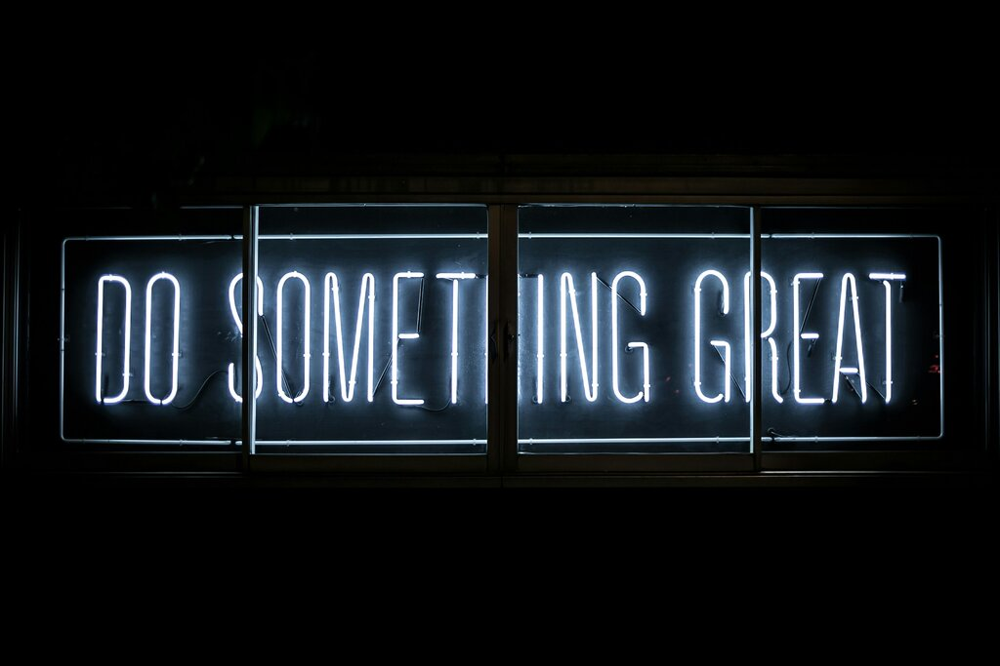

I was born and raised on Long Island, New York, where I grew up with three brothers, making me the second-to-youngest in the family. I’ve always had a deep appreciation for nature and love spending time outdoors, whether it's going for a walk or embarking on a hike. In my spare time, I also enjoy cooking and baking, which are both creative outlets for me. When I’m not in the kitchen, you’ll find me spending time with friends, watching movies, or listening to music.
I’m a communication major at Brigham Young University - Idaho with an emphasis on digital and social media. I’ve gained some experience doing social media marketing over the years. From being a content discovery intern to being a content marketing intern, I’ve been able to use and even develop new skills that will carry with me in future positions. I’ve learned and acquired skills such as being detail-oriented, time management, and organization. I’ve been able to use my creativity to develop innovative ideas and my diligence to perform my responsibilities to the best of my abilities.
I’m grateful for all that I have learned thus far from my education and work experience and can’t wait to expand my horizons. I’m about to graduate with my bachelors in April and am excited to enter a new beginning.
